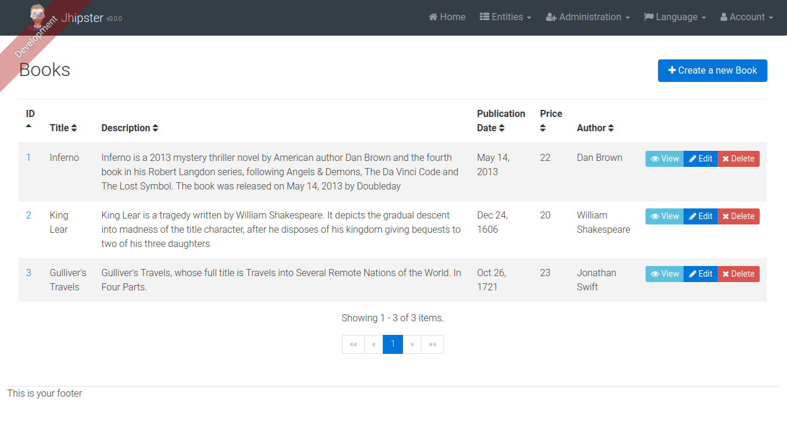

Once you have created your application, you will want to create entities. For example, you might want to create the book entity, which represents a book. For this, you will need:
The "entity" sub-generator will help you to create most of this code, but it isn't magical, so you will need customize some of the generated code.
Let's create the "Foo" entity, which has a text field and a date field.
One of the only things JHipster cannot generate for you is your database schema. As we are using Liquibase, you need to update your Liquibase configuration file.
src/main/resources/META-INF/liquibase/db-changelog.xml
For our "Foo" entity, the changeSet is already here as an example: just uncomment it to have it ready.
Create the entity with the sub-generator. For instance, for creating the "Foo" entity, please type:
yo jhipster:entity foo
The generated entity has:
Of course, you will have to customize those fields for your specific entities.
JHipster has created a Spring Data JPA repository called FooRepository and a Spring MVC REST Controller called FooResource.
Those files contain all the basic CRUD operations, and don't need to be modified if your needs are simple.
Of course, if you want some more complex business behaviors, you might need to add a Spring @Service class.
JHipster has created three JavaScript files for you:
foo-router.jsfoo-controller.jsfoo-service.js
Add those files to your index.html file, just after the other existing AngularJS scripts.
If you prefer to have only some big app.js, controllers.js and services.js files, you can
also merge the generated code into those existing files.
JHipster has created a foos.html view, which has the basic CRUD operations.
This view will be were most of the work will occur, depending on the attributes you have added to your entity, and your business requirements.
You can test your "foo" controller on http://localhost:8080/#/foo.
It should look like this:
